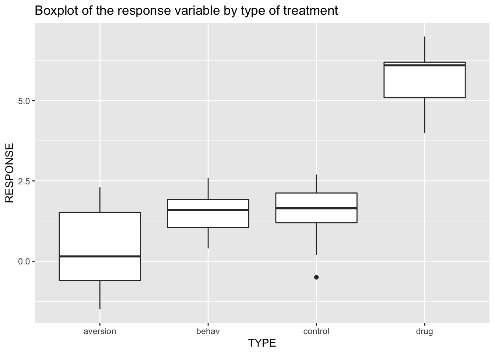

Exploring the Data

In this section, you will explore the data by computing summary statistics and visualizing the data.
Importing the Data
The data to be analyzed are saved in a dataframe object called surgery which can be imported using the following code.
surgery <- read.csv(url("https://raw.githubusercontent.com/StephenVillejo/S1Z.AnovaLab/main/surgery.csv"))
surgeryExercise 1
Modify the code above to limit the number of rows of surgery printed to only 5.
The function head() will give a limited view of a dataset.
head(surgery)## INITIAL FINAL TREAT RESPONSE TYPE
## 1 30.2 32.0 1 1.8 control
## 2 35.3 34.8 1 -0.5 control
## 3 32.4 34.6 1 2.2 control
## 4 31.9 34.2 1 2.3 control
## 5 28.4 30.3 1 1.9 control
## 6 30.5 33.2 1 2.7 controlCreating boxplot
The basic code below produces a boxplot of the variable RESPONSE by TYPE. Specified in the ggplot() function is the (1) data argument which is the data frame to use for plot, and the (2) mapping argument which describes how the variables in the data are mapped to the visual properties (aesthetics) of the plot that you want. In the mapping argument, we specify in the x argument our grouping variable which is TYPE and in the y argument the variable whose values we plot which is RESPONSE in our data. Finally, we use the geom_boxplot() function to produce the boxplot.
Run this code in your own R console to view the boxplot.
ggplot(data = surgery, mapping = aes(x=TYPE, y=RESPONSE)) +
geom_boxplot()Exercise 2
Using the labs() function, modify the code above to put a title in the plot. In the labs() function, the argument for the title is called title.
You want to include in the code labs(title = "Boxplot of the response variable by type of treatment").
ggplot(data = surgery, mapping = aes(x=TYPE, y=RESPONSE)) +
geom_boxplot() +
labs(title = "Boxplot of the response variable by type of treatment")
Compare the lines inside the boxes and see which among the four is the largest. Recall that the line inside the box of a boxplot corresponds to the median.
Recall how to interpret the boxplot. The line that divides the box into two parts is the median, while the two lines that form the box are the 1st and 3rd quartiles. When the median is very close to either the bottom or top of the box, and if a whisker is more extended while the other whisker is shorter, then the distribution is skewed. Finally, a data point that is located outside the whiskers of the box plot is an outlier."
Producing summary measures
The code below produces the mean of the variable RESPONSE by TYPE. The code uses pipes, denoted by %>%, which is a powerful tool for expressing a sequence of multiple operations. The code starts with specifying the dataframe surgery. Next, it uses the group_by() function so that the succeeding operations are performed by group. We specify inside the group_by() function the grouping variable which is TYPE. Finally, we use the summarise() function to compute summary statistics. In the code below, we use the function mean() to compute the mean. The summarise() function produces a new data frame with the number of rows as the number of groups and the number of columns as the number of summary measures computed. You may specify more than one function, separated by ,, inside the summarise() function if you wish to compute other summary measures in addition to the mean.
Run this code in your own R console to view the summary.
surgery %>%
group_by(TYPE) %>%
summarise(mean = mean(RESPONSE))Exercise 3
Modify the code above to produce both the mean and the standard deviation for each treatment group.
Within the summarise() function, you want to calculate the standard deviation as well as the mean, using sd().
surgery %>%
group_by(TYPE) %>%
summarise(mean = mean(RESPONSE) , sd = sd(RESPONSE))## # A tibble: 4 x 3
## TYPE mean sd
## <chr> <dbl> <dbl>
## 1 aversion 0.44 1.35
## 2 behav 1.5 0.688
## 3 control 1.45 0.981
## 4 drug 5.79 0.933Recall how to interpet basic summary statistics such as mean, median, standard deviation, and skewness.